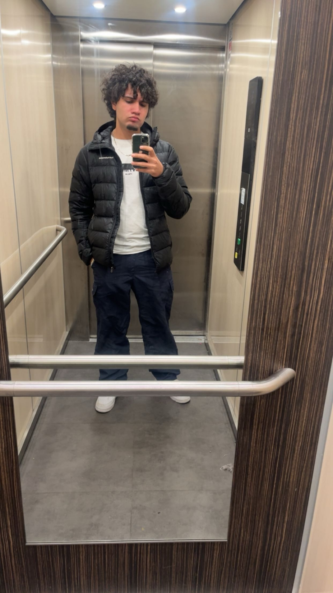
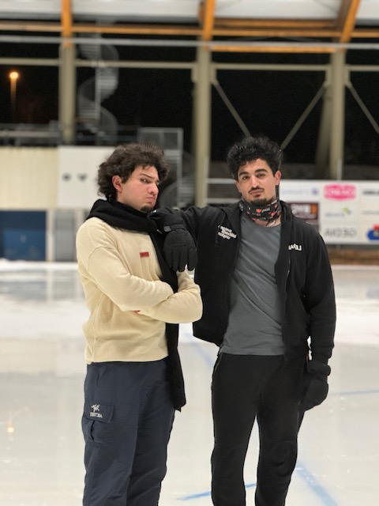
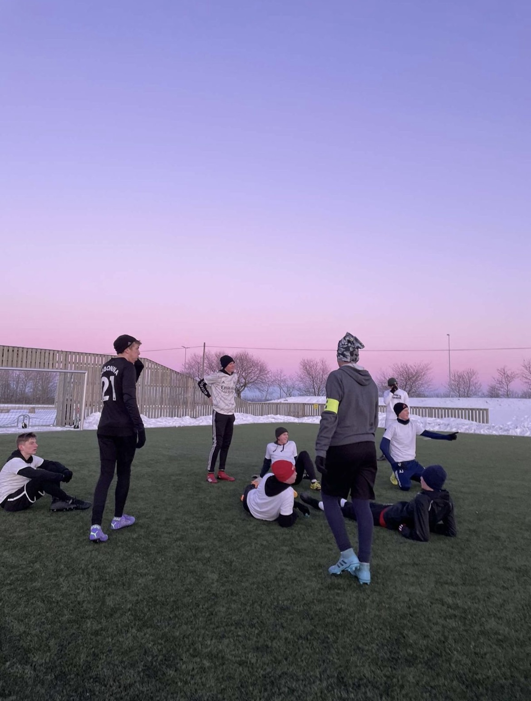
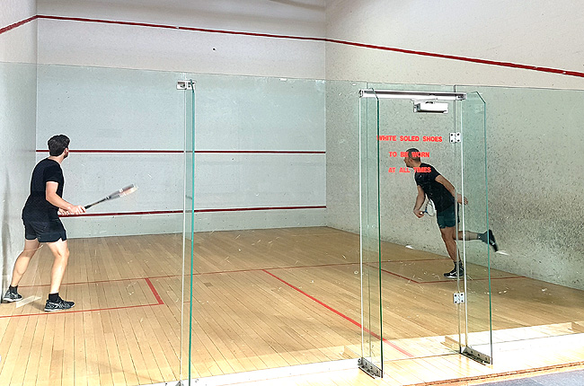
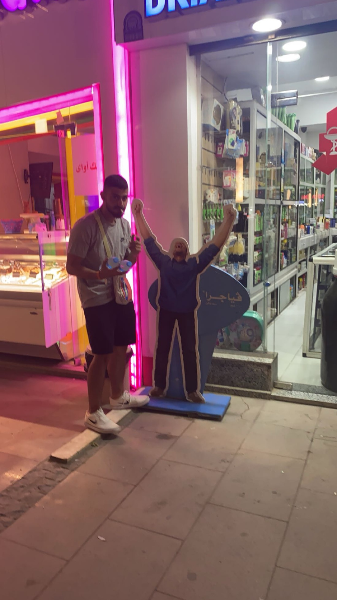
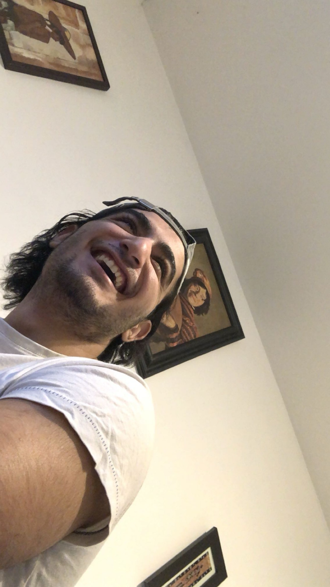
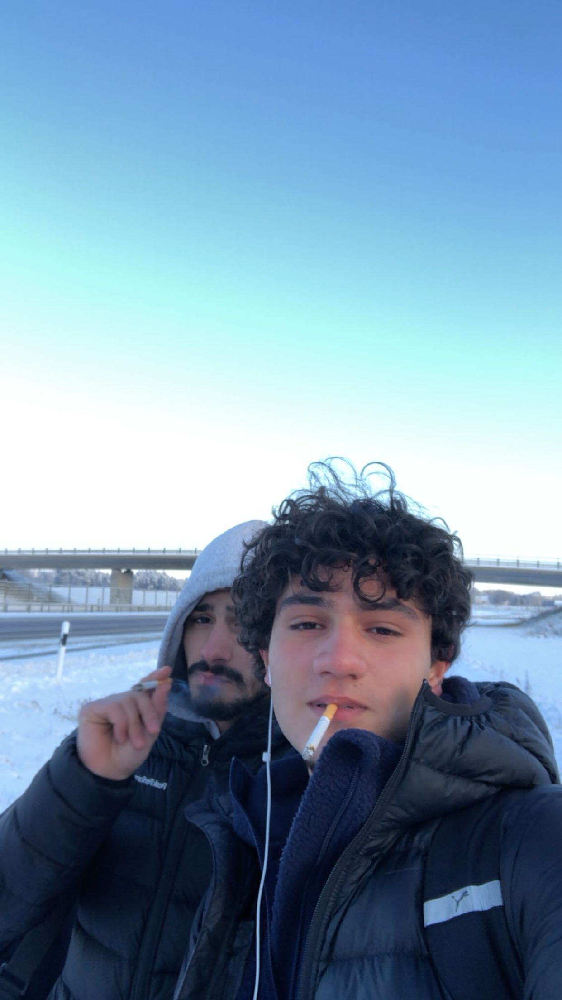

Welcome to My Portfolio
Hej, mitt namn är Adnan. Jag är 21 år gammal lyckad ung man. På min hemsida ska jag förklara vilka hobby jag gillar.
About Me
Skridskor: Jag gillar skridskor eftersom jag tycker att det är alltid lika kul att glida på snö. Samt så är det ännu mer roligt om man har med sig ett sällskap. Man kan även ta med sig varm choklad och en bakelse så blir det mysigt.
Fotboll: Jag gillar fotboll på grund av att jag gillar tävlings i allmänhet och varje gång man spelar en match så är det lika mycket utmaning och tävling. Det är även kul när man kör med sina kompisar och speciellt med bästa kompisar då man har kemi och samspel med de.
Squash: Det är ett spel som man spelar med en annan. Lite likt paddel med jag gillar den mer. Jag gillar den eftersom jag spelade den med min bror när vi var småa men jag tycker fortfarande om den samt så är jag fortfarande lika bra på den.
Portfolio
  Contact Me
to contact me plaese press the link below
Tap here!